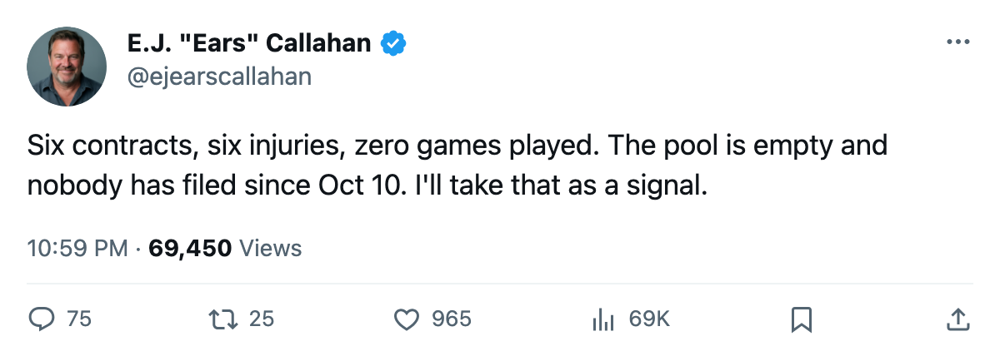
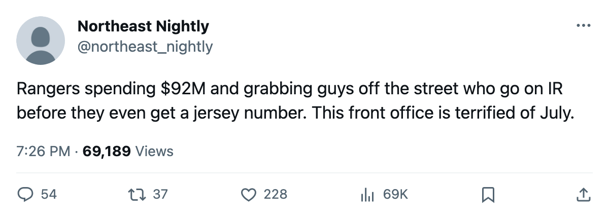

Sign-and-Injure, Round 2: 2 More Filed Oct 10. Both on IR by Oct 15. The Pool Has 0 Names.
NYR bought a defenseman for $173,610. The league listed him on IR 3 days later. That's 6 contracts, 6 injuries, 0 men who ever put on a sweater in a game.
 E.J. "Ears" CallahanInsider · The Hot Stove
E.J. "Ears" CallahanInsider · The Hot Stove

Sign-and-injure continues: 6 for 6 IR in 8 days, pool now empty
The piece
The pattern this desk flagged on Oct 12 has not stopped. Two more contracts filed Oct 10. Two more IR entries with onset dates the league places between 2005-10-13 and 2005-10-15. The free-agent pool still holds 0 names.
 Dale Purinton64 signed with
Dale Purinton64 signed with  New York Rangers on Oct 10 for $173,610. The league designated a back, onset sometime between Oct 13 and Oct 15, return 2005-11-17. Thirty-eight days on the shelf for a depth defenseman who never appeared in a lineup. Steve Ott70 signed with
New York Rangers on Oct 10 for $173,610. The league designated a back, onset sometime between Oct 13 and Oct 15, return 2005-11-17. Thirty-eight days on the shelf for a depth defenseman who never appeared in a lineup. Steve Ott70 signed with  Dallas Stars the same day for $511,830. Concussion. Return 2005-11-05. Twenty-four days.
Dallas Stars the same day for $511,830. Concussion. Return 2005-11-05. Twenty-four days.
Between Oct 7 and Oct 10, 6 contracts were filed. All 6 are on the injured list. Not one of these men has logged a shift in the 2005-06 season.
The pool is still dry
The free-agent pool holds 0 names. Not a single unsigned player in the league's records. The well that fed those signings is empty, and the last transaction filed was Oct 10. Nobody has tried since. Either there is nobody left to sign or the last 6 deals have made the practice look unwise.
NYR is the interesting case. They sit on $92.95M, the highest payroll in the league, and they carry 5 contract-year players at 88 or better:  Mike Dunham82 at $3.10M,
Mike Dunham82 at $3.10M,  Alexei Kovalev82 at $8.57M,
Alexei Kovalev82 at $8.57M,  Eric Lindros81 at $4.50M,
Eric Lindros81 at $4.50M,  Brian Leetch80 at $8.20M,
Brian Leetch80 at $8.20M,  Petr Nedved80 at $4.60M. All five carry 92 morale and could be gone in 9 months.
Petr Nedved80 at $4.60M. All five carry 92 morale and could be gone in 9 months.
A $173,610 signing on a full roster is a payroll-margin move, not a second-pair fix. That is where these contracts come from.
NYR has 5 points from 3 games. The league's per-point cost sits at $18.59M. They hold the most draft capital in the league at 6 picks, including  Toronto Maple Leafs's 3rd-rounder. The asset base is there. The payroll is the problem, and the payroll walks in July.
Toronto Maple Leafs's 3rd-rounder. The asset base is there. The payroll is the problem, and the payroll walks in July.
What the desk is watching
The question this desk posed 3 days ago was whether the pattern would continue. It did, twice, in the same week. The follow-up question is simpler: does anyone file another contract? The pool is empty. Nobody has tried in 5 days. If nothing is filed by the weekend, the pattern ends where the supply does.

